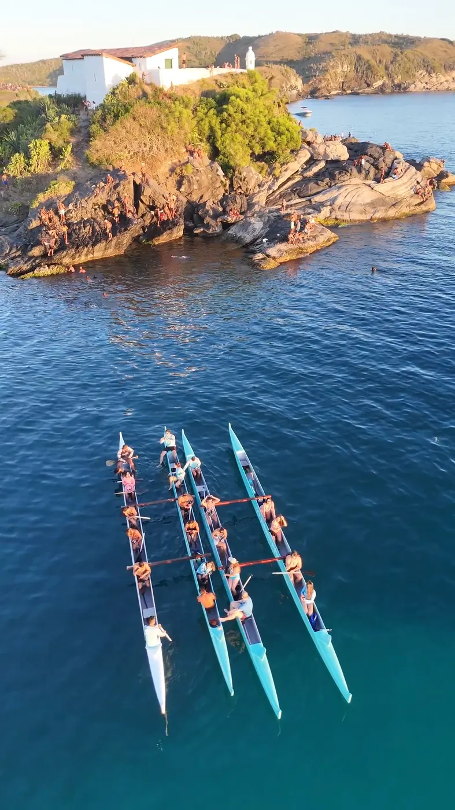
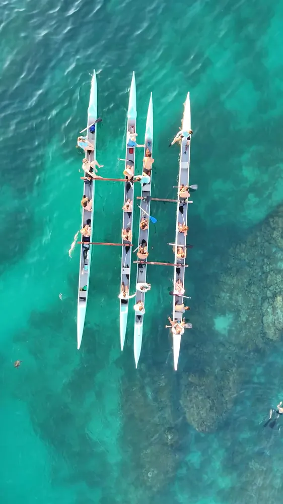
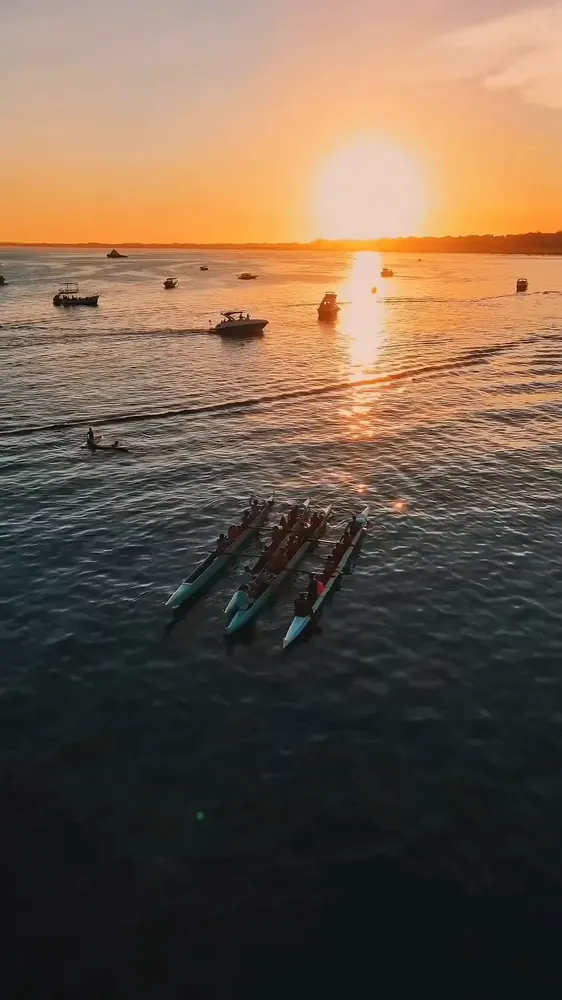
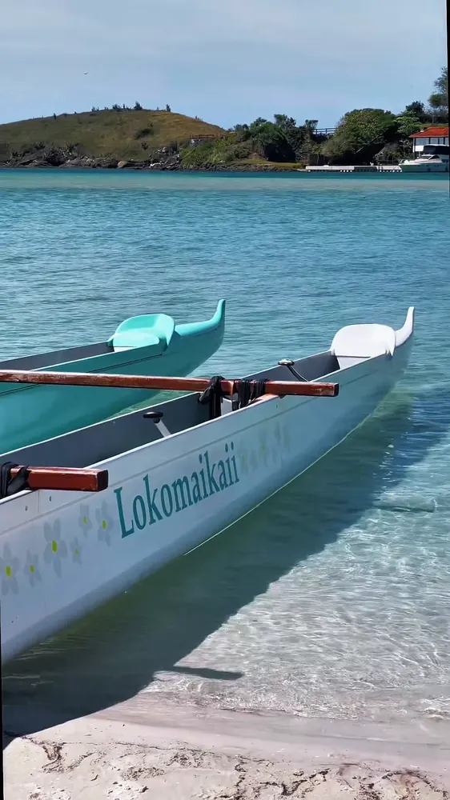
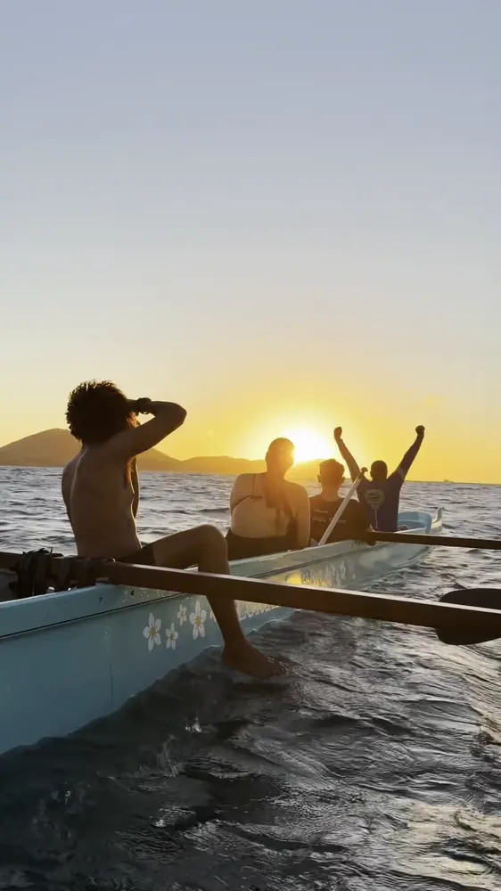

Vem remar com a gente no mar de Cabo Frio. Não precisa de experiência: é só chegar, que a gente te recebe.
Quero remarUma das primeiras ohanas de canoa havaiana da região. Clube feito pra quem quer qualidade de vida, com ritmo tranquilo e muito mar.
A Kai é a assistente virtual da Ohana: ela te conta os horários e reserva sua vaga.
Roupa leve, que possa molhar, e uma garrafinha de água. Passa o protetor solar ainda em casa.
Instrutor com você o tempo todo, com paradas pra mergulho e fotos quando o mar deixa.
Durante a semana e no sábado de manhã, saindo da Praia do Terminal de Transatlântico.
Para remar, é só reservar sua vaga pelo WhatsApp antes de vir. Assim a gente confirma o mar do dia e te espera.
Quer remar mais vezes por semana? Chama a gente. O valor da aula avulsa pode ser abatido na primeira mensalidade.
Aceitamos Wellhub (a partir do plano Silver) e TotalPass (a partir do TP3): os horários variam, confirme pelo WhatsApp antes de vir.
Do amanhecer ao pôr do sol, no mar aberto ou na água turquesa.




Além das turmas, a gente faz saídas especiais em datas marcadas, conforme o mar.
O nascer do sol visto do mar, nas primeiras horas do dia.
Remada no fim da tarde, com o pôr do sol de Cabo Frio.
Uma remada noturna sob a luz da lua cheia.
Remadas mais longas, com roteiros especiais e mais tempo no mar.
Exclusivo pro seu grupo: vocês escolhem dia, trajeto e paradas, a equipe avalia se é seguro e acompanha.
Experiências para empresas, com integração e dinâmicas de equipe.
Não precisa saber nadar nem estar em forma. Tem colete salva-vidas pra quem quiser usar: é só avisar o instrutor antes de sair.
O ritmo é sempre tranquilo. Somos um clube focado em qualidade de vida, e quem rema pela primeira vez vai no mesmo barco de quem rema há anos.
Roupa leve que possa molhar e uma garrafinha de água. Passa o protetor solar ainda em casa. Não temos vestiário nem guarda-volumes no local, só o potinho à prova d'água pra celular e chave.
Avenida Nossa Senhora da Assunção, 1335, Passagem, Cabo Frio (Praia do Terminal de Transatlântico). Há opções de estacionamento próximas ao terminal.
A equipe acompanha o mar e te avisa pelo WhatsApp. Se a remada for cancelada por nossa parte, a gente combina uma nova data com você.
Imprevisto acontece: se precisar desmarcar, avisa a gente com pelo menos 24 horas de antecedência. Com menos de 24 horas a gente não consegue devolver o valor.
Chama a gente no WhatsApp que a Kai te explica direitinho como funciona pra cada caso.